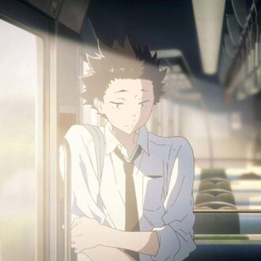
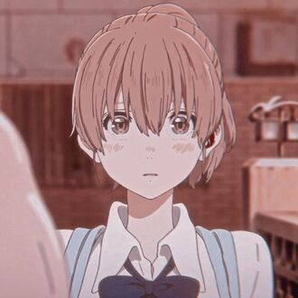
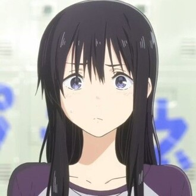
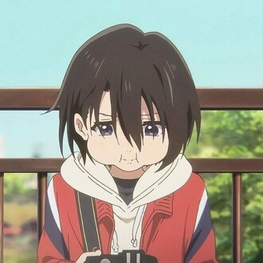
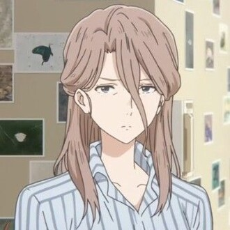
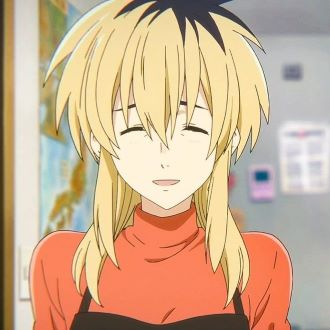

-
Shoya Ishida
Descrição
Ele já foi o valentão de Shōko Nishimiya durante a sexta série, um fato do qual ele se arrepende profundamente e luta para aceitar enquanto se torna amigo de Shōko vários anos depois. Shōya tenta superar seu ódio e dúvidas enquanto sua amizade com Shōko continua a florescer, reunindo novos e velhos amigos ao longo do caminho.
-
Shoko Nishimiya
Descrição
Nascida em sua maioria surda, Shōko frequentemente enfrenta dificuldades de comunicação e conexão com outras pessoas, causando problemas durante sua infância. Particularmente com Shōya Ishida , que se tornou seu valentão durante a sexta série.
-
Naoka Ueno
Descrição
Ela era colega de classe e amiga de Shōya Ishida na escola primária, até que ela negou qualquer participação em ajudá-lo a intimidar Shōko Nishimiya . Quando ela reencontra Shōya e Shōko no ensino médio, velhos sentimentos de paixão e ressentimento começam a ressurgir.
-
Yuzuru Nishimiya
Descrição
A mais nova das duas filhas de Yaeko Nishimiya e irmã mais nova de Shōko Nishimiya . Yuzuru é uma estudante do terceiro ano do ensino médio (9º ano), mas raramente frequenta e, em vez disso, tira fotos pela cidade com sua câmera.
-
Yaeko Nishimiya
Descrição
Yaeko Nishimiya é uma personagem coadjuvante. Ela é apresentada como a Tritagonista na série Koe no Katachi . Ela é filha de Ito Nishimiya e mãe solteira de Shōko e Yuzuru Nishimiya .
-
Miyako Ishida
Descrição
Miyako Ishida é uma personagem coadjuvante da série Koe no Katachi . Ela é mãe da irmã mais velha de Shōya e de Shōya Ishida